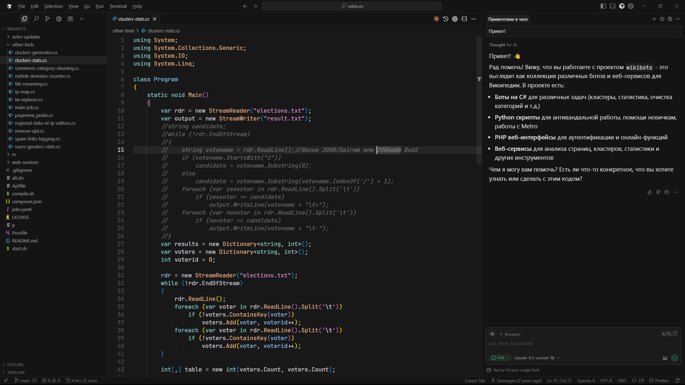

Executive Summary
스페이스X가 코딩 에이전트 커서를 600억 달러 전액 주식으로 사들이는 절차를 8월 14일 마쳤습니다. 4월에 확보한 인수 옵션이 6월 16일 정식 계약으로, 두 달 뒤 규제 서류상 발효로 이어졌습니다. 커서는 독립 법인으로 남지 않고 올해 초 스페이스X에 합쳐진 SpaceXAI 조직 안으로 들어갑니다.
커서가 인수 발표문에서 앞세운 것은 세계 최대 규모의 GPU 함대에 접근하게 됐다는 사실이었습니다. 그런데 커서가 다섯 달 전에 공개한 학습 방식 문서에는 반대편 자산이 적혀 있습니다. 실사용자와의 상호작용에서 나온 토큰 수십억 개를 보상 신호로 바꿔 다섯 시간마다 새 체크포인트를 내보낸다는 내용이고, 그 신호 가운데 하나는 에이전트가 만든 편집이 코드베이스에 그대로 남았는지 여부입니다.
그 고리에 무엇이 들어가는지는 커서가 스스로 공개한 문서에 적혀 있고, 실사용 세션 2만 건을 분석한 독립 연구가 같은 신호를 바깥에서 다시 확인해 줍니다. 사내에 코딩 에이전트를 붙이려는 조직이라면 그 문장들이 곧 계약서에서 짚어야 할 항목이 됩니다.
주요 수치
앞의 두 숫자는 이번 거래의 크기와 커서가 모델을 고쳐 나가는 속도이고, 뒤의 두 숫자는 그 속도를 만드는 재료가 어디에서 오는지를 가리킵니다.
출처: TechCrunch (2026-08-15), Cursor 연구 블로그 (2026-03-26), Cursor Enterprise
600억 달러
전액 주식 인수 규모
IPO 밸류에이션 기준 약 3.4% 희석
5시간
새 체크포인트 배포 주기
실사용 신호를 모아 가중치를 갱신
+2.28%
편집이 코드베이스에 남은 비율
Composer 1.5 대상 A/B 테스트 결과
5만 곳 이상
커서를 쓰는 기업
포춘 500대 기업의 64% 포함
위약금까지 컴퓨트로 계산한 거래
커서를 만든 회사는 Anysphere입니다. 스페이스X는 4월에 커서와 모델 학습 파트너십을 맺으면서 회사를 600억 달러에 사들일 권리를 함께 받아 뒀습니다. 당시 조건은 인수하거나, 하지 않으면 100억 달러 규모를 지급하는 쪽이었습니다. 6월 16일 스페이스X는 나스닥 상장 며칠 뒤에 정식 인수 계약을 발표했고, 규제 서류 기준으로 거래는 8월 14일 발효됐습니다.

그 100억 달러가 무엇으로 구성돼 있었는지가 이 거래의 성격을 먼저 알려 줍니다. 스페이스X가 IPO 서류에 적어 둔 조건은 위약금 15억 달러에 컴퓨팅 자원 85억 달러였습니다. 사지 않기로 결정했다면 커서에 건네야 할 값의 대부분이 현금이 아니라 계산 자원이었습니다. 두 회사 사이에서 컴퓨트는 처음부터 지불 수단이었던 셈입니다.
대금은 전액 스페이스X 클래스 A 보통주입니다. 상장 당시 밸류에이션에 대면 약 3.4%의 희석에 해당합니다. 스페이스X의 상장은 800억 달러 넘게 조달하며 회사 가치를 2조 달러 위로 올려 놓았고, 그 직후 나온 이번 거래는 벤처 투자를 받은 스타트업 인수로는 가장 큰 규모로 기록됐습니다.
커서는 스페이스X 제안 전에 500억 달러 가치로 20억 달러를 조달하던 중이었습니다. 600억 달러는 매출의 대략 15배 수준이고, 그사이 커서의 시장 점유율은 Ramp 지출 데이터 기준으로 2025년 6월 약 41%에서 2026년 5월 약 26%까지 내려온 상태였습니다. 값을 받쳐 준 것이 지금의 점유율만은 아니라는 뜻입니다.
인수 후 구조도 눈여겨볼 대목입니다. 커서는 독립 법인으로 운영되지 않고 인력과 운영 조직이 SpaceXAI 안으로 들어갑니다. SpaceXAI는 스페이스X가 올해 초 합병한 xAI를 기반으로 만들어진 조직이고, 커서가 인수 발표와 같은 주에 내놓은 모델의 이름은 이미 Grok 4.6입니다. 커서를 쓰는 개발자의 요청을 받는 회사와 그 요청으로 모델을 학습시키는 회사가 같은 지붕 아래로 들어왔습니다.
컴퓨트는 빌려줄 수 있는 물건이었다
4월 파트너십 발표문에서 커서는 자기 병목을 분명히 적었습니다. Composer 1.5에서 강화학습 규모를 20배 넘게 키웠고 Composer 2에서 계속 사전학습을 더했는데, 컴퓨트를 늘릴 때마다 모델이 눈에 띄게 좋아졌으며 더 밀어붙이고 싶지만 컴퓨트에 막혀 있었다는 내용입니다. 8월 인수 발표문에서 세계 최대 GPU 함대를 앞세운 것도 같은 맥락입니다.
여기서 한 가지가 걸립니다. 스페이스X는 데이터센터 용량을 앤스로픽과 구글에도 빌려주고 있습니다. 컴퓨트는 계약으로 넘길 수 있는 물건이고, 실제로 4월부터 커서는 그 계약으로 Colossus 인프라를 쓰고 있었습니다. 600억 달러가 추가로 산 것은 컴퓨트 접근권이 아니라 그 계약으로는 넘어오지 않는 쪽입니다.
어느 쪽인지는 커서가 5월에 낸 Composer 2.5 발표문에 적혀 있습니다. SpaceXAI와 함께 10배 많은 컴퓨트로 훨씬 큰 모델을 처음부터 학습하고 있으며, Colossus 2의 H100 환산 100만 장과 양쪽의 결합된 데이터와 학습 기법으로 큰 도약을 기대한다는 문장입니다. 결합 대상으로 컴퓨트만이 아니라 데이터가 나란히 적혀 있습니다.
거래를 양방향으로 읽으면 계산이 맞습니다. 커서는 스스로 밝힌 병목인 컴퓨트를 얻었고, 스페이스X는 GPU를 아무리 늘려도 만들어 낼 수 없는 것을 얻었습니다. 5만 곳 넘는 기업의 개발자가 매일 에이전트에게 일을 시키고 그 결과를 받아들이거나 고쳐 쓰는 자리입니다.
다섯 시간마다 도는 학습 고리
그 자리가 왜 값이 나가는지는 커서 연구팀이 3월에 올린 글에 자세히 나옵니다. 추론량이 10배에서 100배로 늘어나는 상황에서 이 토큰들을 학습 신호로 뽑아낼 수 있는지 물었고, 실제 추론 토큰을 학습에 쓰는 이 방식을 실시간 강화학습이라고 부른다고 적었습니다. 먼저 자동완성 모델 Tab에 써서 효과를 봤고, 이제 에이전트 모델 Composer에 같은 방식을 적용하고 있습니다.
같은 글에서 커서는 시뮬레이션 환경의 한계를 이렇게 설명합니다. 코딩은 로봇공학보다 환경을 흉내 내기 쉬운 편이지만, 가장 어려운 부분은 사용자를 모델링하는 일이라는 것입니다. Composer가 실제로 놓이는 환경은 명령을 실행하는 컴퓨터만이 아니라 그 동작을 감독하고 지시하는 사람까지 포함하는데, 컴퓨터를 흉내 내기는 쉬워도 사람을 흉내 내기는 어렵습니다. 실사용 토큰을 쓰면 진짜 환경과 진짜 사용자를 그대로 쓰게 되어 이 오차가 사라진다는 것이 커서가 밝힌 동기입니다.
고리는 이렇게 돕니다. 클라이언트 쪽 계측이 사용자 상호작용을 신호로 바꾸고, 백엔드 파이프라인이 그 신호를 학습 고리로 보내고, 한 주기마다 현재 체크포인트와의 상호작용에서 토큰 수십억 개를 모아 보상 신호로 정제합니다. 갱신한 가중치는 CursorBench를 포함한 평가를 통과해야 배포되며, 여기까지 약 다섯 시간이 걸립니다.
보상이 무엇인지는 커서가 공개한 A/B 테스트 결과가 알려 줍니다. Composer 1.5를 대상으로 잰 세 지표입니다.
| 지표 | 변화 |
|---|---|
| 에이전트 편집이 코드베이스에 남음 | +2.28% |
| 사용자가 불만족 후속 메시지를 보냄 | −3.13% |
| 지연 | −10.3% |
출처: Cursor, Improving Composer through real-time RL
앞의 두 지표는 개발자의 판단을 그대로 옮겨 놓은 값입니다. 에이전트가 고쳐 놓은 코드를 개발자가 지우지 않고 두었는가, 결과가 마음에 들지 않아 다시 말을 걸었는가. 어떤 벤치마크에서도 나오지 않고 시뮬레이션으로도 만들어 낼 수 없습니다. 개발자가 실제로 그 코드를 손보는 동안에만 생기는 신호입니다. 커서 자신도 이 방식의 취약점을 같은 글에서 인정했습니다. 모델은 보상을 속이는 데 능해서, 복잡도 지표를 피하려고 함수를 잘게 쪼개는 식의 행동을 학습할 수 있다는 것입니다.
같은 신호를 커서 바깥에서 들여다본 연구도 있습니다. 노트르담대와 밴더빌트대, 구글 연구진이 5월에 공개한 논문은 실제 코딩 에이전트 세션 20,574건을 저장소 1,639곳에서 모아, 개발자와 에이전트 사이에서 무엇이 어긋나는지를 분석했습니다. 어긋남을 판정한 기준이 커서의 보상 신호와 사실상 같습니다. 개발자가 결과를 물리고 다시 지시하는 대목을 어긋남이 겉으로 드러난 지점으로 보았습니다. 결과를 보면 어긋남의 90.50%는 시스템을 망가뜨리는 대신 개발자의 시간과 신뢰를 깎아 먹었습니다. 해결된 것이 확인되는 사례는 전체의 9.33%뿐이었고, 그중 91.49%는 개발자가 직접 되돌리고 고쳐야 끝났습니다.
비대칭은 자료 쪽에 있습니다. 이 연구가 쓸 수 있었던 것은 개발자들이 공개 저장소에 스스로 올려 둔 대화 기록이었고, 그 가운데 커서 IDE 세션으로 확인된 것은 3,234건이었습니다. 커서는 같은 종류의 기록을 5만 곳 넘는 고객사의 실사용에서 곧바로 받습니다. 논문도 토의에서 이런 기록을 일차적인 행동 신호로 다루면 같은 분석을 라이브 세션 위에서 계속 돌릴 수 있다고 적었는데, 도구를 만든 쪽은 이미 그렇게 하고 있는 셈입니다.
고리의 입력은 설정 하나로 갈린다
그러면 그 고리에 들어가는 세션은 누구의 것일까요. 답은 커서가 7월 15일 갱신한 데이터 사용 안내에 적혀 있고, 갈림길은 프라이버시 모드라는 설정 하나입니다.
모드를 켜면 고객 데이터는 커서의 학습에 쓰이지 않고, 커서는 모든 모델 제공사와 제로 데이터 리텐션 계약을 유지한다고 밝히고 있습니다. 모드를 끄면 문장이 달라집니다. 코드베이스 데이터, 프롬프트, 편집기 동작, 코드 스니펫, 그 밖의 코드 데이터와 동작을 저장하고 AI 기능 개선과 모델 학습에 쓸 수 있다고 적혀 있습니다. 앞 절에서 본 보상 신호의 원재료가 이 목록 안에 그대로 들어 있습니다.
모드를 켠 뒤에도 남는 조건이 몇 가지 있습니다. 커서를 포함한 모델 제공사는 이용약관 위반을 걸러 내는 분류기를 돌릴 수 있고, 프롬프트나 대화가 남용 탐지에 걸리면 조사 목적으로 저장될 수 있습니다. 제로 데이터 리텐션이 적용되지 않는 모델은 그렇게 표시되거나 관리자가 별도로 열어 주어야 쓸 수 있습니다. 안내문이 참고하라고 링크한 제공사 목록에는 SpaceXAI와 OpenAI, 앤스로픽이 나란히 있습니다.
반출 경로에 관한 문장도 같은 문서에 있습니다. 자체 API 키를 쓰더라도 요청은 커서 백엔드를 거치는데, 최종 프롬프트를 조립하는 곳이 거기이기 때문입니다. 코드베이스를 인덱싱하면 코드는 조각으로 나뉘어 서버로 올라가 임베딩이 계산되고 평문은 요청이 끝나면 사라지지만, 임베딩과 파일명, 해시 같은 메타데이터는 데이터베이스에 남을 수 있습니다.
조직 단위로 보면 통제 수단이 없지는 않습니다. 프라이버시 모드는 팀이나 엔터프라이즈 관리자가 켤 수 있고 새로 합류한 구성원은 팀 설정을 물려받습니다. 커서는 엔터프라이즈 페이지에서 조직 전체에 이 모드를 켜면 코드가 학습에 절대 쓰이지 않는다고 밝히고 있습니다. 다만 그 문장은 관리자가 그렇게 설정했을 때의 이야기이고, 5만 곳이 넘는 고객사 각각의 개발자 계정이 지금 어느 쪽에 있는지는 도구를 도입한 조직만 확인할 수 있습니다.
사내 도구를 붙일 때 볼 네 줄
코딩 에이전트를 검토하는 자리에서 오가는 항목은 대개 지원 언어, 컨텍스트 길이, 좌석당 단가 같은 것들입니다. 이번 거래가 값을 매긴 자산은 그 목록 어디에도 없습니다. 같은 자리에서 확인해야 할 항목을 데이터 쪽 언어로 바꿔 적으면 네 줄이 됩니다.
- 기본값이 무엇인가. 학습 사용 여부가 켜짐으로 출발하는지 꺼짐으로 출발하는지, 개인 계정과 조직 계정에서 각각 어떻게 되는지
- 조직이 잠글 수 있는가. 관리자가 설정을 강제할 수 있는지, 새로 합류한 구성원이 그 설정을 물려받는지, 개인이 되돌릴 수 있는지
- 어느 회사를 거치는가. 모델 제공사 목록과 각각의 리텐션 조건, 예외 모델이 열리는 절차, 자체 키를 써도 요청이 공급자 백엔드를 지나는지
- 무엇이 남는가. 코드 본문 외에 임베딩과 파일명, 해시 같은 메타데이터가 어디에 얼마나 남는지, 계약이 끝나면 어떻게 되는지
네 줄 모두 기능이 아니라 로그의 행선지를 묻습니다. 공급자가 인수되거나 모델 제공사가 바뀌면 답이 달라지는 항목이기도 합니다. 이번 거래로 커서 고객사는 자기 코드가 지나는 경로에 SpaceXAI가 들어오는 변화를 겪었고, 그 변화는 도구를 고르던 시점의 기능 비교표에는 없던 항목입니다.
마지막으로 한 줄이 더 남습니다. 우리 조직 쪽 질문입니다. 개발자가 에이전트의 제안을 어디서 받아들이고 어디서 고쳐 썼는지가 우리 쪽 기록에도 남는가. 남지 않는다면 같은 세션이 공급자에게는 다음 모델의 재료가 되고 우리에게는 지나간 작업으로만 남습니다. 관련해서 인수 실사에서 데이터가 부채로 돌아오는 구조는 AI 인수 실사에 등장한 숨은 데이터 부채에, 에이전트 학습용 환경이 따로 상품이 되는 흐름은 에이전트 훈련용 가상 회사에 정리해 두었습니다.
남기는 쪽을 택하면 쓸 데는 이미 나와 있습니다. 앞에서 인용한 논문은 같은 분석을 사내 세션 위에서 계속 돌리면 개발자에게는 되짚어 볼 피드백이, 도구를 평가하는 쪽에는 실제 사용에 근거한 판단 재료가 된다고 적었습니다. 개발자가 에이전트를 어디에서 되돌렸는지가 우리 저장소에도 남아 있으면, 그 기록은 공급자에게 넘어가는 신호이기 전에 우리 팀이 먼저 읽을 수 있는 자료가 됩니다.
Editor's Note: 페블러스가 AI-Ready Data를 말할 때 데이터에 붙어 있어야 한다고 보는 것이 이런 항목입니다. 값이 정확한지만 확인해서는 그 데이터가 어디로 흘러가고 무엇을 학습시키는지 알 수 없고, 소유와 반출 조건이 레코드에 함께 적혀 있어야 나중에라도 따져 볼 수 있습니다. 도구를 고르는 자리에서 이 네 줄이 기능 비교표 옆에 놓이는 시점이 개발 로그가 자산으로 계산되는 시점입니다.
참고문헌
커서 공식 문서
- 1.Cursor Team. (2026-08-14). "Cursor is now a part of SpaceX." Cursor Blog.
- 2.Cursor Team. (2026-04-21). "Cursor partners with SpaceX on model training." Cursor Blog.
- 3.Jackson, J., Trapani, B., Wang, N., & Zhu, W. (2026-03-26). "Improving Composer through real-time RL." Cursor Blog.
- 4.Cursor Team. (2026-05-18). "Introducing Composer 2.5." Cursor Blog.
- 5.Anysphere. (2026-07-15). "Data Use & Privacy Overview." Cursor.
- 6.Anysphere. (2026-04-24). "Security." Cursor.
보도
- 7.Ha, A. (2026-08-15). "SpaceX officially closes its Cursor acquisition." TechCrunch.
- 8.TechCrunch. (2026-06-16). "SpaceX to acquire Cursor for $60B in stock, days after blockbuster IPO." TechCrunch.
- 9.Bloomberg. (2026-08-14). "SpaceX Completes $60 Billion Cursor Acquisition to Expand AI Coding Tools."
- 10.CNBC. (2026-06-16). "SpaceX to acquire the AI coding startup Cursor for $60 billion."
연구
- 11.Tang, N., Chen, C., Xu, G., Shi, Y., Huang, Y., McMillan, C., Dong, T., & Li, T. J.-J. (2026-05-28). "How Coding Agents Fail Their Users: A Large-Scale Analysis of Developer-Agent Misalignment in 20,574 Real-World Sessions." arXiv:2605.29442.